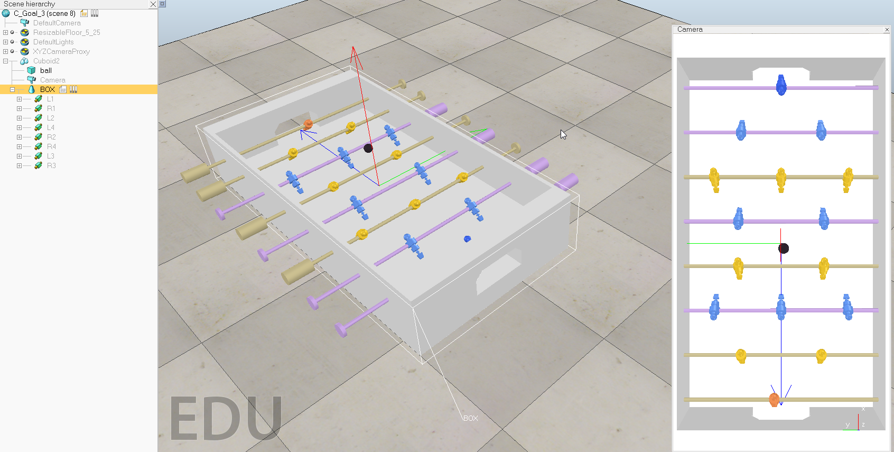

編輯報告書 << Previous
編輯報告書 << Previous
第十五周
完成手足球程式編譯，剩下場地修改，由於組員軌道製作時間過長所以先用程式寫回球。
當中有很多版本，從{多桿件設定與測試} →{多桿件回位設定與測試}→{導入電腦對打&第二桿件電腦判斷添加}→{加入電腦對打&第二及三桿件電腦對打code}→{第四桿件電腦回擊設定}→{球重生&左下計分}，沒意外下個版本就可以結束了。((全寫在lua中
影片是照順序放der
目前最新版本

↓↓↓↓↓↓↓↓↓↓↓↓↓↓↓↓↓↓
目前最新版本

↓↓↓↓↓↓↓↓↓↓↓↓↓↓↓↓↓↓
function sysCall_init()
Ball=sim.getObjectHandle('ball')
--player--
Slide_rail= sim.getObjectHandle('R1')
Roller= sim.getObjectHandle('RR1')
Slide_rail2= sim.getObjectHandle('R2')
Roller2= sim.getObjectHandle('RR2')
Slide_rail3= sim.getObjectHandle('R3')
Roller3= sim.getObjectHandle('RR3')
Slide_rail4= sim.getObjectHandle('R4')
Roller4= sim.getObjectHandle('RR4')
Slide_rail_v=0
Roller_v=0
Roller_v2=0
Roller_v3=0
Roller_v4=0
dVel=0.5
--computer--
Body=sim.getObjectHandle('LSO1')
Body2=sim.getObjectHandle('LSO2')
Body3=sim.getObjectHandle('LSO3')
Body4=sim.getObjectHandle('LSO4')
-- test=sim.getObjectHandle('LS3_P1')
LR1=sim.getObjectHandle('LR1')
LR2=sim.getObjectHandle('LR2')
LR3=sim.getObjectHandle('LL3')
LR4=sim.getObjectHandle('LR4')
L1=sim.getObjectHandle('L1')
L2=sim.getObjectHandle('L2')
L3=sim.getObjectHandle('L3')
L4=sim.getObjectHandle('L4')
--goal--
Player_G = 0
Computer_G = 0
end
function sysCall_actuation()
--player--
A= sim.getObjectHandle('RS1_PO1') --auto_return--1
PA= sim.getObjectPosition(A,-1)
if PA[1] >= -0.712 then
Roller_v = Roller_v + dVel*3
end
B= sim.getObjectHandle('RS2_PO1') --auto_return--2
PB= sim.getObjectPosition(B,-1)
if PB[1] >= -0.531 then
Roller_v2 = Roller_v2 + dVel*3
end
C= sim.getObjectHandle('RS4_PO2') --auto_return--3
PC= sim.getObjectPosition(C,-1)
if PC[1] >= -0.197 then
Roller_v3=Roller_v3 + dVel*5
end
D= sim.getObjectHandle('RS3_PO1') --auto_return--4
PD= sim.getObjectPosition(D,-1)
if PD[1] >= 0.137 then
Roller_v4=Roller_v4 + dVel*5
end
message,auxiliaryData=sim.getSimulatorMessage()
while message~=-1 do
if (message==sim.message_keypress) then
if (auxiliaryData[1]==32) then --"space"--restart
sim.setObjectPosition(Ball,-1,{-0.1429, -0.1334, 0.5})
end
if (auxiliaryData[1]==122) then --"z"--goalkeeper
Roller_v = Roller_v - dVel*50
if (Roller_v > 0) then
Roller_v = 0
end
end
if (auxiliaryData[1]==120) then --"x"--2
Roller_v2 = Roller_v2 - dVel*30
if (Roller_v2 > 0) then
Roller_v2 = 0
end
end
if (auxiliaryData[1]==99) then --"c"--3
Roller_v3 = Roller_v3 - dVel*30
if (Roller_v3 > 0) then
Roller_v3 = 0
end
end
if (auxiliaryData[1]==118) then --"v"--4
Roller_v4 = Roller_v4 - dVel*30
if (Roller_v4 > 0) then
Roller_v4 = 0
end
end
if (auxiliaryData[1]==2008) then --"down"--return_player
Roller_v = Roller_v + dVel*20
Roller_v2 = Roller_v2 + dVel*20
Roller_v3 = Roller_v3 + dVel*20
Roller_v4 = Roller_v4 + dVel*20
if (Roller_v < 0) then
Roller_v = 0
end
if (Roller_v2 < 0) then
Roller_v2 = 0
end
if (Roller_v3 < 0) then
Roller_v3 = 0
end
if (Roller_v4 < 0) then
Roller_v4 = 0
end
end
if (auxiliaryData[1]==2009) then --"right"
Slide_rail_v = Slide_rail_v + dVel/5
if (Slide_rail_v < 0) then
Slide_rail_v = 0
end
end
if (auxiliaryData[1]==2010) then --"left"
Slide_rail_v = Slide_rail_v - dVel/5
if (Slide_rail_v > 0) then
Slide_rail_v = 0
end
end
end
message,auxiliaryData=sim.getSimulatorMessage()
end
Slide_rail_v2 = Slide_rail_v/1.3
Slide_rail_v3 = Slide_rail_v/1.5
Slide_rail_v4 = Slide_rail_v/1.4
sim.setJointTargetVelocity(Slide_rail,Slide_rail_v)
sim.setJointTargetVelocity(Roller,Roller_v)
sim.setJointTargetVelocity(Slide_rail2,Slide_rail_v2)
sim.setJointTargetVelocity(Roller2,Roller_v2)
sim.setJointTargetVelocity(Slide_rail3,Slide_rail_v3)
sim.setJointTargetVelocity(Roller3,Roller_v4)
sim.setJointTargetVelocity(Slide_rail4,Slide_rail_v4)
sim.setJointTargetVelocity(Roller4,Roller_v3)
--computer--
Body_s = sim.getObjectPosition(Body,-1)
Ball_s = sim.getObjectPosition(Ball,-1)
X = Body_s[1] - Ball_s[1]
Y = Body_s[2] - Ball_s[2]
if 1 then --C_goalkeeper
if X <= 0.02 then
sim.setJointTargetVelocity(LR1,-5)
sim.setJointTargetVelocity(L1,0)
elseif X > 0.02 or X <= 0.01 then
sim.setJointTargetVelocity(LR1,5)
YYYYY = Y*7
sim.setJointTargetVelocity(L1,YYYYY)
end
--[[ if X <= 0.02 and Y <= 0 then --old_version
sim.setJointTargetVelocity(LR1,-5)
elseif X > 0.02 and Y <= 0 then
sim.setJointTargetVelocity(LR1,2)
elseif X <= 0.02 and Y > 0 then 40623130
sim.setJointTargetVelocity(LR1,-5)
elseif X > 0.02 and Y > 0 then
sim.setJointTargetVelocity(LR1,2)
end]]
end
Body_s2 = sim.getObjectPosition(Body2,-1)
X2_1 = Body_s2[1] - Ball_s[1]
Y2_1 = Body_s2[2] - Ball_s[2] - 0.15
Y2_2 = Body_s2[2] - Ball_s[2] + 0.15
if X2_1 >= 0.02 then --C_second--
if Ball_s[2] <= -0.133 then
C_K_B_X2()
Y2_1 = Y2_1*5
sim.setJointTargetVelocity(L2,Y2_1)
elseif Ball_s[2] > -0.133 then
C_K_B_X2()
Y2_2 = Y2_2*5
sim.setJointTargetVelocity(L2,Y2_2)
end
end
Body_s4 = sim.getObjectPosition(Body4,-1)
X4_1 = Body_s4[1] - Ball_s[1]
Y4_1 = Body_s4[2] - Ball_s[2] - 0.15
Y4_2 = Body_s4[2] - Ball_s[2] + 0.15
if X4_1 >= 0.02 then --C_third--
if Ball_s[2] <= -0.133 then
C_K_B_X4()
Y4_1 = Y4_1*3
sim.setJointTargetVelocity(L4,Y4_1)
elseif Ball_s[2] > -0.133 then
C_K_B_X4()
Y4_2 = Y4_2*3
sim.setJointTargetVelocity(L4,Y4_2)
end
end
--[[
test_s = sim.getObjectPosition(test,-1)
M = test_s[2]- Ball_s[2]
print(M)
--]]
Body_s3 = sim.getObjectPosition(Body3,-1)
X3_1 = Body_s3[1] - Ball_s[1]
Y3_1 = Body_s3[2] - Ball_s[2]
Y3_2 = Body_s3[2] - Ball_s[2] +0.2487
Y3_3 = Body_s3[2] - Ball_s[2] -0.2487
if X3_1 >= 0.02 then --C_fourth--
if Ball_s[2] < -0.0028 and Ball_s[2] >= -0.2487 then
C_K_B_X3()
Y3_1 = Y3_1*2
sim.setJointTargetVelocity(L3,Y3_1)
elseif Ball_s[2] >= -0.0028 then
C_K_B_X3()
Y3_2 = Y3_2*2
sim.setJointTargetVelocity(L3,Y3_2)
elseif Ball_s[2] < -0.2487 then
C_K_B_X3()
Y3_3 = Y3_3*2
sim.setJointTargetVelocity(L3,Y3_3)
end
end
--reborn_ball & count goal--
if Ball_s[1] < -0.85 then
Player_G = Player_G + 1
end
if Ball_s[1] >= 0.61 then
Computer_G = Computer_G+1
end
if Ball_s[1] < -0.85 or Ball_s[1] >= 0.61 then
sim.setObjectPosition(Ball,-1,{-0.1429, -0.1334, 0.5})
print[[Player:Computer]]
print(' '..Computer_G..' '..Player_G)
end
end
function C_K_B_X2() --C_second_kick--
if X2_1 < 0.03 then
sim.setJointTargetVelocity(LR2,-5)
elseif X2_1 > 0.03 then
sim.setJointTargetVelocity(LR2,5)
end
end
function C_K_B_X3() --C_third_kcik--
if X3_1 < 0.03 then
sim.setJointTargetVelocity(LR3,-5)
elseif X3_1 > 0.03 then
sim.setJointTargetVelocity(LR3,5)
end
end
function C_K_B_X4() --C_fourth_kick--
if X4_1 < 0.03 then
sim.setJointTargetVelocity(LR4,-5)
elseif X4_1 > 0.03 then
sim.setJointTargetVelocity(LR4,5)
end
end
編輯報告書 << Previous